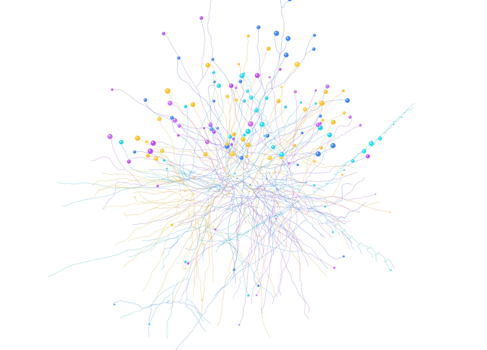

Neural tier
A real, numpy-verified inference engine (BERT and LLM, constrained decoding); training and the foundry are owed.
4 Strong · 4 Solid · 3 Partial · 1 Emerging
Measured against: ggml/llama.cpp · ONNX Runtime · Folders: base/neural(opens in a new tab) · The guide to this area's functions

Rethought from first principles
What Softanza kept from what works, and what it rethought, as the library wrote it down in its design documents and narrations.
The Softanza wayEvery capability works with no model at all, gets sharper when a local model is present, and never depends on anything paid or remote.
Kept from the best practice
- Models are standard GGUF files run on the vendored ggml runtime. Softanza consumes the common format first, and only later learns to write it. source(opens in a new tab)
- Grammar-constrained decoding follows the algorithm of llama.cpp's grammar sampler, the reference design for GBNF. The machine itself is written in-house. source(opens in a new tab)
- The text encoder is checked against an independent numpy implementation of the same forward pass, within a measured tolerance band. source(opens in a new tab)
Rethought
- Structure kills malformed answers, not false ones. A grammar shapes the answer while it is generated. A court then checks the values, which no grammar can check. source(opens in a new tab)
- A model call is a pure typed function: the declared type or a refusal, a mandatory budget, no power to act. A broken answer never passes as a value. source(opens in a new tab)
- A model file opens only if its fingerprint matches one recorded for it. The check runs before the parser reads a byte, because the parser is where an attack would enter. source(opens in a new tab)
- The instruction sent with a structured request is fixed by measurement. Extra advice to the model dropped valid answers to 0 of 10, so it was removed. source(opens in a new tab)
The consumption side is complete and genuinely wired to a patched, vendored ggml: real GGUF loading, id-exact tokenizers, a numpy-parity BERT encoder, a multi-architecture causal LLM decoder with grammar-constrained decoding, and a measurement-gated GPU path. What is not there is the production side. A llama.cpp-class runner, wired into a governed library — not yet a training or model-production platform.
What a maker does with it, and what stands out
- numpy-parity BERT encoder (1.64e-7)
- grammar-constrained decoding wired to the structured-output contract
- id-exact WordPiece and BPE tokenizers
- measurement-gated wgpu GPU path (2-5x)
What is owed
- wire ggml's backward pass -- the training foundry
- a quantization (encode) path
- ship or fetch a real semantic model for CI
- ONNX import
The Softanza way, run
What Softanza does differently in this area, shown by code taken from its narrations and guards, and run for this page.
A well-formed answer that is false still passes: the schema guarantees shape, never truth, and the guard shows this limit on purpose.
oP = StzOutputSchemaQ([
[ :field = "person", :type = :string ],
[ :field = "age", :type = :number, :must = [ [ ">=", 0 ], [ "<=", 130 ] ] ]
])
aLie = oP.ParseOutput('{ "person":"Ada Lovelace", "age":9 }')
chk("a schema-valid LIE validates -- Ada Lovelace was not nine", aLie[:ok] = 1)
chk("...and the court has no complaint to make about it", len(aLie[:findings]) = 0)[OK] a schema-valid LIE validates -- Ada Lovelace was not nine [OK] ...and the court has no complaint to make about it
run on 2026-10-01 21:17 inside the library at commit 0e72e2e2c; taken from base/test/neural/structuredoutput_narrated.ring(opens in a new tab)
A model call declared to return a number, with a mandatory budget, gives a real number you can compute with, not text to decode.
oN = new stzLLMFunction("add")
oN.SetPrompt("Compute: {input}")
oN.ReturnsNumber()
oN.Budget(2)
oN.SeedAnswer("2+3", 5)
chk("a Number-typed answer computes", oN.Call_("2+3") + 1 = 6)[OK] a Number-typed answer computes
run on 2026-10-01 21:17 inside the library at commit 0e72e2e2c; taken from base/test/neural/llmfunction_narrated.ring(opens in a new tab)
The lanes, one by one
Lanes and their notes are quoted as they were read at the source, on Read from the source on 2026-09-16.